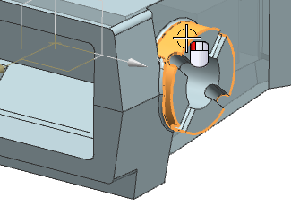
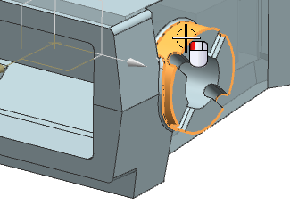

Enlarge the bosses
-
Use Resize Face
 to change the diameter of the face shown to 200 millimeters. Make sure to select the symmetric face, too.
to change the diameter of the face shown to 200 millimeters. Make sure to select the symmetric face, too.

Use Resize Face  to change the diameter of the face shown to 200 millimeters. Make sure to select the symmetric face, too.
to change the diameter of the face shown to 200 millimeters. Make sure to select the symmetric face, too.
